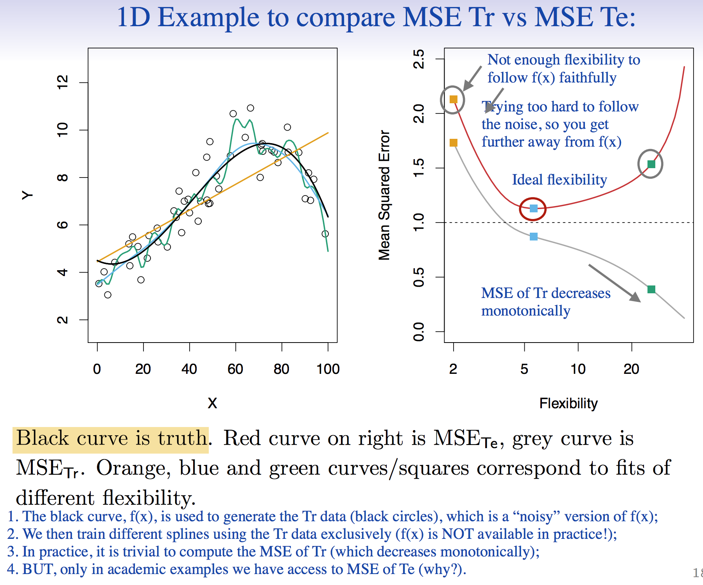
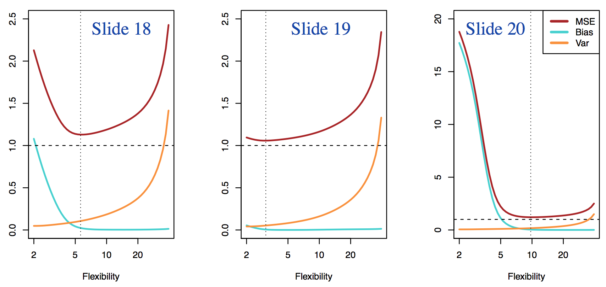
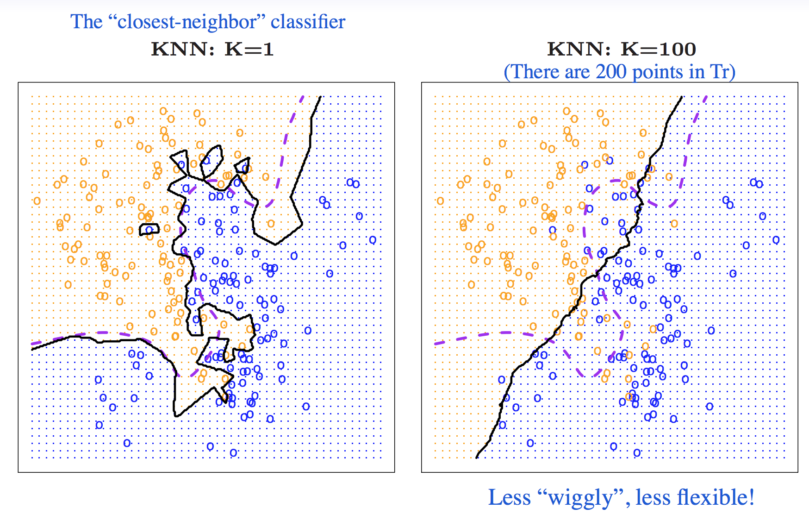

Chapter 2 Notes
Fundamental Problem
Y=f(x)+ϵ is a function we don't know but want to estimate. x is a regressor vector, Y is our output, and ϵ is our irreducible error that results for either missing regressors in x or from unmeasurable variance in nature.
Two classes of problems
Prediction: Estimate Y with Y^=f^(x)+ϵ.
Inference: see how Y changes with changes in X1...Xp
Classes of Problems
Regression problems deal with quantitative responses.
- parametric: reduces problem of estimating f to a problem of estimating parameters
- i.e: When we want to use linear model f(x)=B0+B1X1+...+BpXp, we only have the estimate B0+B1+...+Bp
- Generally more flexible - gets us further from true form of f
- More restrictive but generally more interperable than non-parametric models
- non-parametric:
- no assumption about shape/form of f
- tries to use f^ that is as close to data-points as possible
- Needs very large number of observations
Classification problems deal with categorical or qualitative responses. Note that the type of predictor indicates what type of problem we are trying to solve.
Assessing Model Accuracy
Measuring Quality of Fit - to quantify how "off" predictions are from true response data
We can use mean squared error
MSE=n1i=1∑n(yi−f^(xi))2
- MSE is defined for both training and test data sets.

- Note: Can't just minimize training MSE to minimize test MSE. Most learning models work to minimize training MSE, which does not guarantee a smallest test MSE (might overfit to data). Flexible methods tend to have a higher chance of "overfitting" training data, resulting in a higher test MSE.
Bias-Variance Tradeoff
E[testMSE]=Var(f^(x))+[Bias(f^(x0))]2+Var(ϵ)
Bias: Error introduced by approximating real-life problem with simple models (i.e: linear model).
Variance: the amount by which f^ would change if it was estimated using a different training data set; ideally, f^ shouldn't vary much across training sets
- As model flexibility increases, bias generally decreases and variance increases
- As we increase flexibility, the bias initially decreases faster than the variance increases. At some point, the variance increases faster than the bias declines and thus the test MSE begins to increase.
- Note that test MSE will always be above ϵ
- test MSE is minimized when sum of variance and bias is lowest

Classification
Training Error Rate
Use training error rate to quantify accuracy of f^:
n1i=1∑nI(Yi≠Y^i)where I is an indicator random variable that is 1 if Yi≠Y^i and 0 otherwise
Basically, training error rate averages all misclassifications across n observations
Test Error Rate
Ave(I(Yi≠Y^i)) - a good classifier minimizes this
The Bayes classifier
Assign a test observation x0 a class j for which P(Y=j∣X=x0) is the highest.
Bayes Error Rate: 1−E(maxjPr(Y=j∣X)) - expectation just averages probability over all possible X
- Bayes Error Rate is analagous to irreducible error
KNN
Brief Description: For an observation i, we look at the class of its K nearest neighbors' classes. The class k with the highest propotion wins and we assign i the class k.
Classifier that classifies according to
Pr(Y=j∣X=x)=K1i∈N0∑I(yi=j)
- Note that low K means high model flexibility and high K means low model flexibility

- We also observe the characteristic U shape as we increase model flexibility in the error rates in KNN